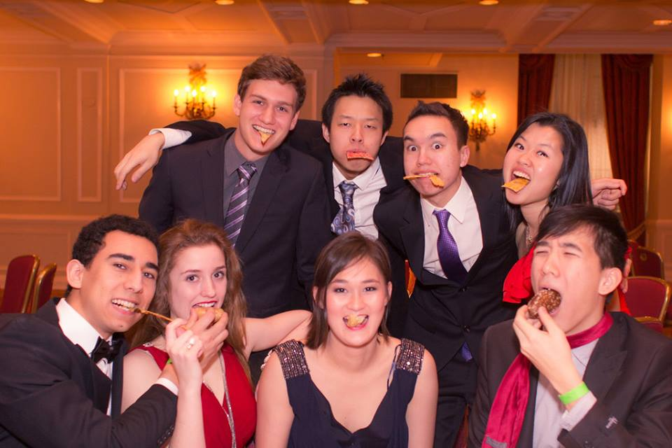
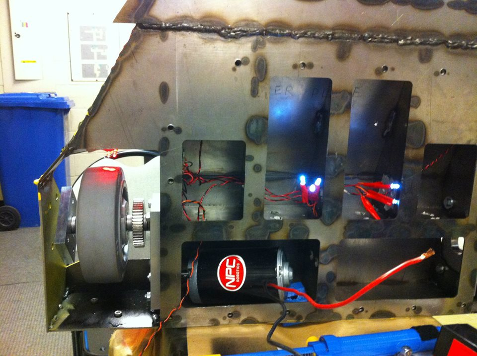

About Me
Projects
Courses
Resume
Links
Contact
About Me
Projects
Courses
Resume
Links
Contact
I am an Electrical and Computer Engineering student from University of Toronto and a hockey enthusiast, currently in my third year. I have spent most of my life in Hong Kong, having attended elementary and high-school there. As an engineer, I love to understand the world in a more practical point of view and improve it by developing and designing ideas. Whether it is circuitary or software, I love to understand how the world has become so dependent on electronics- hence to this day, I am still indecisive whether I am a electrical or computer engineer
This site was developed to apply my HTML, CSS and as a foundation for web development during my free time
As the world is full of mysteries, here are my interests
Academic: Electrical engineering- circuits (analog and digital) and control; Computer engineering- networks
Outside of Class: Circuits and Robotics(Academic); Programming and Web development(Personal)
Scroll down below to see a summary of the projects and courses I have done am doing (and click on the links) to find out more!

Find out more about me
Software: my goal is to improve my understanding of web and server scripting (HTML, CSS and Javascript and PHP); and to become familiar with common libraries such as GTK. Software projects include: Website development- both desktop and mobile; and GUI software development
My mobile website (currently under development)
Hardware: my goal is to improve my application of hardware (muxes, RAM, etc) and to become familiar and apply concepts of electrical components. Hardware projects involve: a simple game utilizing a DE2 board; and basic understanding of common circuits with Arduino
See more of my projects
Areas of Interest: circuits and robotics
Extra-curriculars: Spark, UTRA, Intramurals (Hockey and Volleyball)

Know my academic interests
Summer 2014 : I was a research assistant under Professor W.T. Ng from the VLSI group. My goal is to familarize myself with CAD software used in PCB design and have a better understand of the datashet for compoennts
I have previous work experience with Standard Chartered Bank and YMCA Camping. In additional, I have developed personal and technical skills from undergraduate courses, such as using IDEs and C/C++. Currently I am trying to improve on my programming langauge skills.
Check out my experience